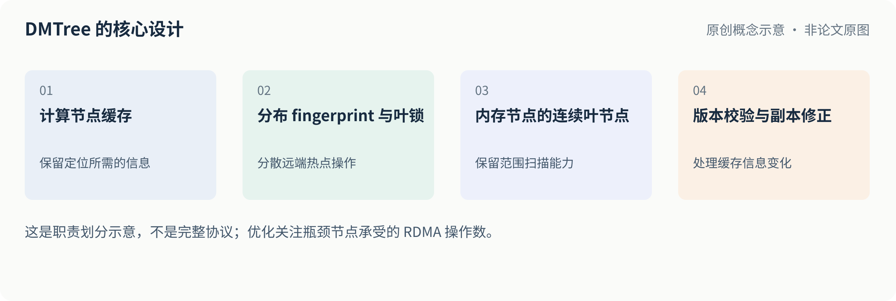
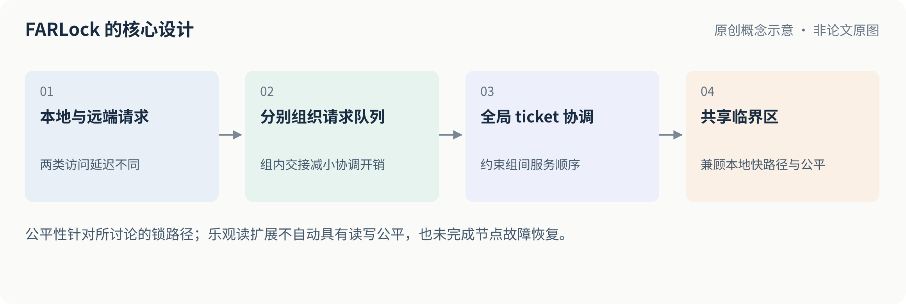
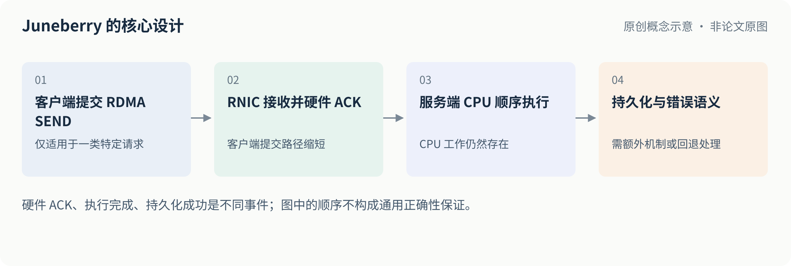
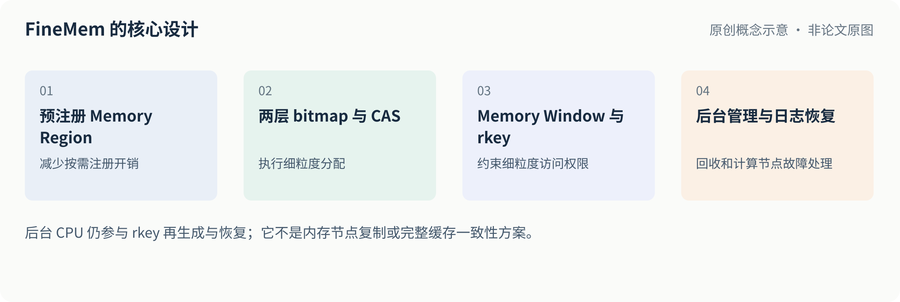

← 两期归档首页这期关注分布式存储里的索引、缓存、锁、请求提交和远端内存管理。共同问题是：在缩短数据路径的同时，如何分摊热点、控制维护成本，并保留正确的顺序、隔离与失败语义。
这是对应日期早报的整理归档，并非当日新发表论文列表。技术正文保持原早报的结论与限制；补充的图解和验证清单属于原创说明与工程建议。所有性能数字均来自作者特定测试条件下的报告，不能直接跨论文排名。本地图片和页面可离线阅读，原文与仓库外链需要联网。
FAST 2026 · 论文 1 / 5
01
DMTree：把索引热点从远端内存节点分散出去
问题：计算与内存分离后，多个计算节点对远端树索引的定位和加锁操作可能集中冲击同一个内存节点。网络带宽充足也不代表远端 RNIC 能均匀承受这些操作。
机制：DMTree 保留连续叶节点以支持范围扫描，同时把用于精确定位的 fingerprint 和叶锁分散到计算节点，通过版本校验修正缓存副本。原本更新路径中落在内存节点的五次 RDMA 操作，有三次转移到计算节点之间。
证据与局限：在 6 个计算节点、1 个内存节点、100GbE ConnectX-6、10 亿条索引项的实验中，插入吞吐相对不同基线约为 2.1–5.7 倍，具体倍数随基线和工作负载变化。代价是每个计算节点约 5.4GB 的缓存与指纹空间；较大数据项的扫描变成带宽瓶颈后，优势缩小。实验主要验证内存索引，并非完整的持久化和复制系统。
对存储的启发：优化目标不一定是让全系统 RDMA 次数最少，而可能是减少瓶颈节点的操作次数。迁移到元数据或索引服务时，要额外测计算节点间流量、缓存失效与故障重建。

原创图解，不是论文原图。全系统操作总数不是唯一目标；热点转移后还要计算节点间流量与副本维护成本。
依据：图6（PDF第6页）；图14（PDF第12页）。这是职责划分示意，不是完整协议；优化关注瓶颈节点承受的 RDMA 操作数。原文图阅读指南
工程验证清单
- 记录内存节点和各计算节点的 RNIC 操作负荷。
- 将约 5.4GB 每节点缓存与指纹占用纳入预算。
- 覆盖缓存失效、故障重建与大对象扫描。
公开归档范围：未核实论文、幻灯片和论文原图的第三方公开再分发许可，因此本包保留来源链接与原创解读，不重发原件。代码另按其逐项许可处理。
OSDI 2026 · 论文 2 / 5
02
FARLock：本地访问快，也要让远端请求公平排队
问题：某些共享数据结构同时有本地 CPU 和远端 RDMA 请求。本地路径可以绕过 RNIC，容易让远端请求在高竞争下等待过久。
机制：把本地与远端请求分成队列，再通过全局 ticket 协调顺序；每组请求共享 ticket、通过队列交接来摊薄协调成本。设计的重点是本地快路径与跨节点公平性之间的权衡。
证据与局限：在 10 节点、56Gbps ConnectX-3 的 Sherman 写密集测试中，均匀负载下本地尾延迟相对对照降低约 11–14 倍、远端降低约 1.7–6 倍，吞吐基本保持。这个数字是特定写入实验的尾延迟结果，不是通用吞吐提升。节点故障恢复仍是未来工作；乐观读扩展也不保证读写公平。
对存储的启发：适合检查元数据服务或共享索引中“本地请求一直插队”的问题。如果你的架构是严格计算／内存分离，内存节点几乎没有本地竞争请求，收益可能不同，应按真实本地访问比例测试。

原创图解，不是论文原图。应按真实的本地与远端请求比例评估，而不是只看总吞吐是否变化。
依据：图4（PDF第6页）；图7（PDF第11页）。公平性针对所讨论的锁路径；乐观读扩展不自动具有读写公平，也未完成节点故障恢复。原文图阅读指南
工程验证清单
- 分别统计本地与远端 P99 和等待时间分布。
- 扫描本地访问比例与锁竞争强度。
- 验证客户端停顿和故障下的行为，不假定论文已解决恢复。
公开归档范围：未核实论文、幻灯片和论文原图的第三方公开再分发许可，因此本包保留来源链接与原创解读，不重发原件。代码另按其逐项许可处理。
OSDI 2026 · 论文 3 / 5
03
FORGE：对象逐个访问，但把缓存管理成组处理
问题：远端缓存中，每次对象访问都更新精细的热度和淘汰元数据，会带来大量远端原子操作和 CPU／RNIC 压力。
机制：Get／Set 仍按对象执行，但把缓存项分组，以组为单位处理更多淘汰和维护工作；本地暂存对象热度，接近淘汰时再合并更新。它试图减少管理开销，同时保留对象级访问语义。
证据与局限：论文报告最高 4.5 倍吞吐，并报告 P50／P99 延迟最多分别降低 4 倍／7.5 倍。实验环境是 100Gbps ConnectX-5 InfiniBand；主要四方对比只用一个内存节点，另有最多三个内存节点的扩展性实验。部分后端 miss 以等待模拟，而不是完整存储应用；因此这些结果不能直接代表线上对象存储的端到端收益。
对存储的启发：设计分布式缓存时，可以把“读写粒度”和“淘汰管理粒度”分开。应重点验证热度漂移、组内冷热混合、后端真实 miss 成本，以及多租户隔离。
依据：图4（PDF第6页）；图13（PDF第12页）。访问粒度与管理粒度分离；这不是把每次 Get 或 Set 改成批量接口。原文图阅读指南
工程验证清单
- 测试组内冷热混合与突变的访问分布。
- 用真实后端 miss 替代等待模拟。
- 增加多租户隔离与多内存节点的扩展测试。
公开归档范围：未核实论文、幻灯片和论文原图的第三方公开再分发许可，因此本包保留来源链接与原创解读，不重发原件。代码另按其逐项许可处理。
NSDI 2025 · 论文 4 / 5
04
Juneberry：利用硬件 ACK 缩短部分存储请求的提交路径
问题：常规存储 RPC 往往要等服务端 CPU 排队、执行并回复；但单边 RDMA 也可能因索引和同步需要多次往返。
机制：对不需要返回执行结果或错误的一类请求，利用 RDMA SEND 的硬件 ACK 缩短提交关键路径，同时让服务端 CPU 按接收顺序执行。CPU 并没有被消除，只是从这类请求的提交关键路径移开。
证据与局限：在 100Gbps ConnectX-5 的写密集 Memcached 测试中，峰值吞吐处中位延迟为 3.2 微秒，对比的 eRPC 为 34.7 微秒。但 PMemKV 的读多写少测试中，中位延迟反而相对 RawRPC 增加 19%，说明它不是通用 RPC 加速器。普通 SEND ACK 也不能直接等同于持久化成功；论文持久版本使用额外机制确保 DMA 完成，并对非幂等请求回退。
对存储的启发：特别适合拿来审视“请求到达、客户端可返回、服务端执行、数据持久化”是否被混为一个事件。采用类似设计前，要明确错误返回、读写顺序、崩溃和重试语义。

原创图解，不是论文原图。先明确客户端何时可返回，再审查错误、重试与非幂等请求，而不是仅优化往返次数。
依据：图1（PDF第5页）；图7（PDF第11页）。硬件 ACK、执行完成、持久化成功是不同事件；图中的顺序不构成通用正确性保证。原文图阅读指南
工程验证清单
- 区分请求到达、提交、执行与持久化时刻。
- 分别测试读多写少与写密集负载。
- 检查错误返回、崩溃重试和非幂等操作的回退条件。
公开归档范围：未核实论文、幻灯片和论文原图的第三方公开再分发许可，因此本包保留来源链接与原创解读，不重发原件。代码另按其逐项许可处理。
OSDI 2025 · 论文 5 / 5
05
FineMem：远端内存分配，如何兼顾小粒度与低浪费？
问题：远端内存按需注册与分配会增加控制开销，粗粒度预留又容易造成碎片和内存浪费；隔离与故障恢复也不能忽略。
机制：预注册 memory region，并利用细粒度 memory window／rkey 控制访问；两层 bitmap 和单边 CAS 处理分配，配合日志恢复计算节点崩溃时的分配元数据。
证据与局限：在 16 个计算节点、1 个内存节点、100Gbps ConnectX-6 的测试中，4KB 分配、512 客户端线程下，平均／P99 延迟为约 43／79 微秒；论文中的一个 one-sided 基线约为 763／16,144 微秒。数字是特定高并发分配测试，不能等同业务整体加速。后台仍需 CPU 做 rkey 再生成与故障恢复，也没有解决内存节点复制或完整缓存一致性。
对存储的启发：适合评估远端缓存或内存池的分配慢路径。复现时除了吞吐，还要测混合对象大小、碎片率、rkey 生命周期，以及后台回收是否跟得上释放速度。

原创图解，不是论文原图。分配快路径之外，后台回收能否跟上释放速率，决定长期运行是否稳定。
依据：图6（PDF第7页）；图10（PDF第11页）。后台 CPU 仍参与 rkey 再生成与恢复；它不是内存节点复制或完整缓存一致性方案。原文图阅读指南
工程验证清单
- 使用混合对象尺寸测碎片与空间利用率。
- 测 rkey 生命周期、回收积压和故障恢复。
- 把高并发分配延迟与业务端到端收益分开报告。
公开归档范围：未核实论文、幻灯片和论文原图的第三方公开再分发许可，因此本包保留来源链接与原创解读，不重发原件。代码另按其逐项许可处理。
如何继续阅读
关注文件系统或元数据路径，可先读 DMTree 与 Juneberry；设计远端缓存或内存池，可先读 FORGE 与 FineMem。FARLock 适合分析本地和远端竞争导致的尾延迟不公平。
把论文中的收益映射回自己的系统时，建议先画出请求路径和正确性边界，再确定基线、硬件、并发度、工作负载和故障模型。单项吞吐或延迟数字不等于生产环境的整体收益。